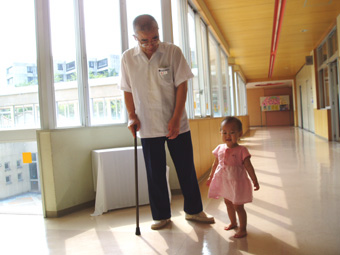

でんでん虫と孫・凜花(小学校)
|
2007年の「独り言」から，「小学生のためのPL処世訓解説」をまとめたものです．
『始業式』 一月九日 PL学園小学校の始業式が、午前八時四十分から講堂で行われました。祭司長と副祭司長、二人のみの祭司ですが、祭文奏上を聞いていると、こんなすばらしい小学校は他にはないなあと思いました。 皆さん、あけましておめでとうございます。「何がおめでたいか」という顔をした人がいましたが、めでたしというのは、芽出甚し(いたし)の略ですから、草木の芽が春になって甚だしく出そろう様をめでたしといったのです。皆さん方もお正月で、さあやるぞ、と草木の芽が出るような気持ちを味わっていることでしょう。校長先生も同じです。だからめでたしでよいのです。ちょっとおめでたいのではないか、という意味ではありません。 それでは第一条、「人生は芸術である」の解説をします。 最後にPL処世訓は、二十一箇条全部で「人生は芸術である」ということを語っているのだと思ってください。私たち一人ずつは、この世に何のために生まれてきたかというと、芸術するために生まれてきたのだ、そうしてそれは楽しくてたまらないものだ、というのが第一条の解説です。
『PL処世訓解説』 一月十五日 月曜日なので児童朝礼で PL処世訓第二条の「人の一生は自己表現である」の解説をしました。備忘録、下記に話の内容をメモします。 みなさん、おはようございます。始業式に第一条の「人生は芸術である。楽しかるべきである」の話をしましたので、今日は第二条「人の一生は自己表現である」の解説をします。To live is to express one's self 、どうして英語で言ったかと言いますと、先週始業式で第一条の話をした後で、一年生から六年生までは一緒に話をすると難しいので、各学年ごとに担任の先生方が、宗教の授業で私に話をさせてくださいとお願いしたのですが、四年生から申し出があって、四年生には一条から三条までのお話をしました。三条の「人は神の表現である」は難しくて話してみて、これは校長先生がもっと勉強しなければならないと思いました。 ところが次の日、一年生にも話をするように言われましたので、一年生に話をしました。そこでYさんに「○○○、あなたは何だ」と言いましたら、「芸術だ」とうれしそうに言ってくれました。Yさんはうちに帰って、お父さん達と話をしたそうです。その時、「芸術でなくてアートといったら、先生は欧米か、とつっこんだかなあ」という会話があったそうです。 アートと言いますと、美術品、例えば一枚の絵というようなものがイメージされます。ところが「私はお父さんとお母さんのアートだ」とじっとして眺めていては困るのです。それが第二条、To live is to express one's self ということです。to expressというのは、例えばみかんを押しつぶしてみかんジュースを作るように、中身を押しつぶして外に出すことをいいます。あなた方自身を押しつぶして、自分という中身を出すことがexpressなのです。ですから、「人生は芸術である」、ということは、「人生はアートです」と言って、静かに壁にかけておくものではなくて、自分が表現することなのです。表現しているそのことが人生だということです。これで今日の「人の一生は自己表現である」という話を終わります。 この後どうぞ、一年生と四年生以外の学級も、私に教室にきて話をするように申し出てください。どのクラスにも喜んで行って話をしたいと思います。
『処世訓解説・第三条、自己は神の表現である』 一月二十二日 今日は月曜日で児童朝礼がある日ですので、処世訓第三条「自己は神の表現である」の解説を致しました。以下は備忘のためのメモです。 みなさん、おはようございます。今日はPL処世訓第三条の「自己は神の表現である」ということのお話をします。この箇条は一番大切な箇条です。処世訓はどの箇条も大切ですが、特にこの箇条が大切なのは「神の表現である」というところで、神様がでてくるからです。 大宇宙の根元の力と言いますと、宇宙物理学や分子生物学という学問を考えなければいけないのですが、宇宙物理学では、一番困るのは、対象とするものが地球上から離れているということです。 そんな遠いところのことはむずかしいけれども、大宇宙と同時に、小宇宙というものがあります。その小宇宙は私たちの身体です。この身体のことは分子生物学という学問で研究します。私たちの身体の一つの細胞には、約三十億の遺伝子の言葉、DNAがあります。しかも私たちの身体には七十兆もの細胞があるのですから、膨大な数であることがわかるでしょう。そういうものを書き込んだ力が神であるとすれば、私たち一人一人が神の表現である、ということが納得できると思います。 例えば、皆さんがテストで百点をとりたいとする、それを白いひげをはやした杖をついた、雲の上に立っている神様のようなものに、「百点とらせてください」とお願いしてもダメなのです。自分は神の表現ですから、自分が百点とれるのです。まず担任の先生の目を見て、授業を聞きなさい。家に帰ったらお父さん、お母さんに、「今日は学校で自己は神の表現であるということを習ったから、私は勉強するね」と言って、予習と復習をしなさい。そうしたらテストの時、必ず百点とれます。その時「神様、ありがとうございました」と感謝するのです。そうすれば、次からはますます神様はみなさんを助けてくれるはずです。そういうように遺伝子や宇宙の力が働くからです。今日のお話はだいぶむずかしかったので、低学年の人にはわからなかったと思いますが、わかった分だけ実験してみてください。゜自己は神の表現である」ことを必ず納得できるはずです。今日のお話はこれで終わります。
『三年生の宗教』 一月二十五日 三年生の宗教の授業で、PL処世訓第三条「自己は神の表現である」の解説をしました。昨日は二年生に同様の話をして、今日は少し上達するかと思ったのですが、立っているのがやっとの身体障害者の身では何度やっても上手にはならないものです。しどろもどろで帰ってきました。 しかし、第三条を始業式で解説した時は、例えばテストで百点をとりたかったらどうしたらとれるかというような話をしたことが、反省され後悔となっていました。 「自己は神の表現である」ということは、私たちの身の回りのことは、すべて大宇宙が出来る時の元素からなりたっているし、私たちの身体の中は、一個の細胞に三十億の言語である遺伝子がつまっています。一つの細胞に三十億というのは、ひとつぶの米粒に、地球の全人口がつまっているような状態です。それが文字であるということは、DNAを本の文字数になおすと、約一万三千冊の本に書かれている文字数と同じだそうです。そういうDNAで私たちの身体が満たされているならば、例えば鉄線の花のDNAと、私たちのDNAは、順番は違うけれども同じアデニン、グアニンといった文字で書かれているのですから、鉄線の花をじっと見つめていたら、鉄線と私たちとは一体になったような気がするものです。そういう気持ちになってから、五七五七七にその鉄線を表現すると、それは短歌になります。そういう短歌を作った先輩の話をします。 ある時、T君が、総合食堂への階段に寄りかかって、そばの花壇の鉄線の花を眺めていました。私はその後ろを通って総合食堂に行き、昼食をすませて帰ってきたところ、T君はまだ鉄線のところから離れないで立っていましたが、私を振り返ると「校長先生、この花は何という名前ですか」と聞きました。私は「鉄線というんだよ」と言いましたが、T君は「鉄線か」とつぶやいて、「じゃあ、これで短歌になっていますか」と言いつつ、次のような短歌を聞かせてくれました。「校庭の花壇に朝の日を受けて赤白青の鉄線の花」と言うのです。 私達の身体は大宇宙からの借り物である元素で満ち満ちていますし、私達を取り巻く全てのものが、同じ元素で満ち満ちています。すなわち私達は「自己は神の表現である」と言えるのです。分子生物学や宇宙物理学は難しい学問ですから、皆さん方が早く中学生、高校生、大学生になって勉強してくださることを期待しています。
『表現せざれば悩がある』 一月二十九日 月曜日ですので、児童朝礼で処世訓第四条「表現せざれば悩がある」の解説をしました。以下はその備忘のためのメモです。 皆さん、おはようございます。今日は処世訓第四条「表現せざれば悩がある」の解説をします。この箇条は第三条の「自己は神の表現である」が難しかったのとはまったく違った意味でむずかしい箇条です。皆さん方は、教室などでペチャペチャとおしゃべりをして、「そこの○○君おしゃべりをやめなさい。うるさいから立っていなさい」などと言われて罰をうけることがあるでしょう。そういう人のために「表現せざれば悩がある」という箇条があるわけではありません。 しかし、事実、表現したから悩みがあるということはあるものです。校長先生なども、余計なことを言ってしまって「しまった、余計なことを言うのではなかった」「物言えば唇さみし」とか「沈黙は金だ」と思うことがしばしばです。しかし、「表現せざれば悩がある」ということは、これまでの「人生は芸術である」「人の一生は自己表現である」という箇条と密接に結びついていますし、第六条の「自我なきところに汝がある」とか、第十条の「自他を祝福せよ」という箇条と密接に結びついていて、決してただ表現すればよいというものではないのです。 日本の国は、江戸時代に士農工商という、長い身分差別の時代がありました。そうした時代の名残がいまだに残っていて、表現しないほうがよいという気持ちになりがちなところを、この処世訓は、人の一生は自己表現だから、それは間違っていると教えてくれているのです。江戸時代のそういった、なるべくものを言わないほうが良い、という考え方が生まれた例話を一つします。 昔、江戸時代、岐阜県の長良川の流域に住んでいるある大工の棟梁の娘がいました。その娘さんのお父さんは既になくなってお母さん一人に育てられたのですが、この娘は頭がよくて学問もあり、その上大変美しい人でした。あまりにも美しいので村中の評判でしたが、一言もものを言わず、決して話をしようとしないので、お嫁にいく年頃になっても縁談がまとまらず不思議がられていました。 そんなある日、お殿様一行が狩りにいって山に分け入ったところ、獲物が一羽もいなくて空を眺めていたとき、一羽の雉がケーンと鳴いて飛び立ちました。殿様はすぐさまその雉を撃ち落としたのですが、その時今まで絶対ものが言えないと思っていたお嫁さんが、「口ゆえに親は長良の人柱雉も鳴かずば撃たれまじきを」と一首の歌を作って口ずさんだのでした。 娘さんが小さかった頃、長良川は大雨のたびに氾濫して、橋脚が崩れるので、お父さんがこんなに何度も崩れるのだから橋に人柱(生きたまま橋脚に埋める)を立てたら崩れなくなるという意見を出したそうです。ところが誰も人柱になり手がなかったので、それならおまえが人柱になれと言われて、大工の棟梁自らが人柱になったので、そのお嫁さんは悲しんで、お父さんは口ゆえに長良川の人柱になった、あの雉も鳴かなければ撃たれなかったのに、と嘆いたのだそうです。 私達には、こういう悲しい思いをした人々の遺伝子も伝わって流れているのですから、つい表現しないほうが丸く収まるという気持ちになりがちですが、このことはPL処世訓の第六条「自我なきところに汝がある」第十条「自他を祝福せよ」という処世訓を身につけて表現すれば、「人の一生は自己表現である」「人生は芸術である。楽しかるべきである」ということで楽しい人生がおくれるのです。これで「表現せざれば悩がある」の解説を終わります。
『感情に走れば自己を失う』 二月一日 今日は木曜日ですので、一時間目に四年生の宗教の授業をさせて頂きました。二回目ですから出欠をとったあと、黒板に白チョークで「感情に走れば自己を失う」と書きました。「感情」と「走れば」と「自己を失う」を黄色のチョークで囲み、今から第五条の解説を致しますが、授業が終わったら、黄色のチョークで囲んだ「感情」とは何か、「走れば」とはどういうことか、「自己を失う」ということはどういうことか、それがわかった人はこの授業をちゃんと受けたという証拠です。 まず、「感情とはどういうことか、わかる人」と質問してみたら、だれも手をあげませんでした。以下、「走れば」「自己を失う」という言葉に対してもだれも手を挙げません。何も知らない白紙のところに話をするのですから、責任は重大です。 校長先生は、毎日気に入らないという思いが十年も二十年も続いて、ある日脳の血管が切れて死ぬところでした。死ぬということが「自己を失う」なかでも最も決定的なことです。神様は、死ぬ前に色々な病気でそれを教えて下さいます。不幸苦痛災難はみしらせであるということは、そういうことです。 でんでん虫はここで感極まって泣いてしまいました。校長先生も右脳出血の時には教主様に「脳出血になりました。お身代わりをお願いします」と苦し紛れにお願いしたものです。だから今こうしてお話ができるのです。 「それではこれで終わります」と授業は終わったのですが、でんでん虫は彼らが大人になったら、もう一言言いたいことがありました。それは芸術ができなくなるということはどういうことか、ということです。 その浮世絵の代表的な作家に葛飾北斎という人がいます。この葛飾北斎が描いた絵に滝の絵があるのですが、この滝の絵が、と言って黒板に滝の絵を描いて、校長先生が描いた滝の絵とは全然違って、最高に高い値段がつけられました。なぜかというと葛飾北斎は、この滝の絵を描くにあたって、その滝にこもっている滝の神様のみたまを感じ取って描いたのです。その神様のこもっていることが見抜けて、はじめて芸術であるかどうかが問題となります。 自己を失うということは、感情に走ったのではそういう芸術作品は作れないということです。皆さん方も神様のこもった作品を作ることができるのですから、例えばテストなどで、充分に自己表現した時はそのテストは百点になっている、ということを発見するでしょう。
『感情に走れば自己を失う』 二月五日 月曜日ですので、児童朝礼で処世訓解説をさせて頂きました。忘れないようにその記録をとどめます。 みなさん、おはようございます。今日は処世訓第五条「感情に走れば自己を失う」という箇条の解説をします。この箇条は、前にお話しました「人生は芸術である、楽しかるべきである」「人の一生は自己表現である」と、皆さん方の朝から晩までと密接に結びついているものです。宇宙の話とか遺伝子というような、ちょっと見た事のない世界の話ではなく、朝から晩まで、感情は私達の生活を左右しています。 例えば校長先生は、ここに来る時に車椅子を私の奥さんに押してもらっていましたが、そこでかんしゃくを起こしました。何か忙しかった校長先生の奥さんの都合を考えずに「車椅子を押してくれ」と言ったので、「忙しい」と言われて、「そんなら押さなくていい」と言ってかんしゃくを起こしたのです。 次に「感情に走る」ということはどういうことかといいますと、先生方の使う大言海という大きな辞書を引きますと、「走る」「奔る」「趨る」などがあります。その他にも、感情に走るという場合はずっと持続することを走ると言います。「納豆が嫌いだ」という感情は、毎日嫌いで持続しますから、そのように続いた感情が一つになって面積が大きくなった状態も「走る」と言います。 そういう感情に走った場合に、自己を失うということは、例えば、赤信号なのにそれ急げと道路に飛び出したら、自動車にひかれて死ぬでしょう。そういうように自己を失うことになるのです。 話の後で先輩の先生に講評して頂きましたが、私の話には、感情と言っても、豊かな感情、ものを美しいと感じたり、悲しいと感じたりする、よい意味での説明が抜けていた。そういう世界でも度を過ごしたら自己を失う、ということが欠けていたというご批評をいただきました。その通りだと思います。
『自我無きところに汝がある』 二月十三日 連休明けですので、児童朝礼は放送朝礼となりました。私の処世訓解説は第六条「自我無きところに汝がある」の番でしたが、放送朝礼ですので、子供たちの顔は見えないけれども、座って聞いてくれているだけ気が楽でした。以下、備忘の為のメモです。 みなさん、おはようございます。今日はPL処世訓第六条「自我無きところに汝がある」の解説をいたします。この箇条はとても難しい箇条です。今までどの箇条もすべてむずかしかったのですが、この箇条がなぜむずかしいかというお話をします。校長室に一枚の色紙が飾ってあります。ノーベル文学賞をもらった川端康成さんの書で、明恵上人の短歌で「雲を出でて我にともなう冬の月風や身にしむ雪や冷たき」というものです。ノーベル文学賞をもらうような一流の文学者が、一生懸命考えてもわからなくて感動して書いてくださった色紙ですから、我々凡人にわかるわけはないのです。明恵上人という人は気性の激しい人で、座禅を組んで考えても、自分とは何かがわからないから、自分の耳を切り取ってしまった人ですが、心のやさしい人で、空に浮かんでいる雲や月を、自分の友達のようにあたたかく感じて、お月さんが風に吹かれて体にしみこんでいるだろう、雪がさぞかし冷たかろうと思いやっている短歌です。 このような気持ちはむずかしいのですが、実は皆さん方にとっては、実に親しいわかりやすいことでもあります。先週の金曜日の朗読発表会で、二年生が「かさこじぞう」を朗読してくれましたね。このお話でおじいさんが、お正月様がそこまできているのに、家には餅もないということで、おばあさんと相談して何か売るものはないかと考えて、スゲの笠を編んで五枚持って町に売りにでかけました。正月を、お正月様と言っているおじいさんの気持ちを理解してください。おじいさんは一枚も売れなかったすげ笠を、帰り道で雪の中に立っているお地蔵さんに一枚ずつ五枚全部かぶせてあげました。さいごに自分のほおかむりをしていた手ぬぐいをとってかぶせてあげて、自分は寒いけれども帰ってきたのです。その行為は、自分は寒いけれどもお地蔵さんはもっと寒いだろうと、相手のことを思いやった行為で、「自我無きところに汝がある」という行為を、この時代の人々も尊んだことがわかるでしょう。 おじいさんは、明恵上人と同じ気持ちだったのです。みなさんも自分には自分の気持ちがあるように、他人には他人の気持ちがあることがわかるでしょう。その時、他人の気持ちを大切にして、自分の気持ちは後にするということが「自我無きところに汝がある」という処世訓の意味です。今朝の私の話はこれで終わります。 SC寮長のY先生が今週は聞きに来てくださっていたので、実は歴史上の人物を例にして、吉田松陰のことを話し、「自我無きところに汝がある」という話しにしようとしたのでしたが、それは止めにしました。 止めにした吉田松陰の話しというのは、松蔭の遺詠のことです。「呼び出しの声待つほかに今の世に待つべきことのなかりつるかな」呼び出しというのは相撲の呼び出しではありません。獄舎につながれた松蔭の首切り役人が、「吉田松陰」と首を切るために呼び出す声です。その声を待つほかに、今の世に待つべきことがなくなった吉田松陰の断腸の思いが表現されているではありませんか。 伊藤博文以下、明治維新を成し遂げた若い人々に次の時代を託して死んでいく人の最期の自己表現を思えば、「自我無きところに汝がある」という世界は、自我無き世界のその奥に又、「自我無きところに汝がある」という世界があることを鑑賞したかったのでした。セザンヌに「不思議なことだ。自分というものが入ると何もかもだめになってしまう」というつぶやきが残されていますが、あらゆる芸術は、自我が入ったところにそれだけ必ずスポイルされるものであることを、いつか時を改めて子供たちに話したいと思います。
『一切は相対とある』 二月十九日 月曜日なので、児童朝礼で、処世訓第七条「一切は相対とある」の解説をしました。先週、第六条の「感情に走れば自己を失う」の解説中、小便をもらしましたので、今回はそういうことがないように絶対に話しの途中で小便がもれないように神さまにお願いしていたところが、なんと週番の先生の話の後で舞台に上がったら、足が一歩も動かなくなっていました。動かない足を無理に動かして前に進み、途中まで行って遂に断念して「車椅子を持ってきてください」とお願いし、車椅子で舞台の正面まで行き、車椅子に乗ったままで話しをしました。 みなさん、おはようございます。今朝はこんな形で出てきましたが、PL処世訓第七条「一切は相対とある」の解説をします。今、校長先生は話す立場で、皆さん方は聞く立場です。このように話す立場と聞く立場は相対の関係にあるといいます。これで話す人が聞こえない声で話したり、聞く人がぺちゃくちゃしゃべっていたりすると、この場はめちゃくちゃになりますが、話す人がしっかり話し、聞く人が静かに聞きますと、それは相対一如ということになって、よりよい芸術になるのです。立派な児童朝礼芸術になるというべきでしょう。 そのように「一切は相対とある」という処世訓は、相対とあるすべての現実を、自分が一如として芸術するべきであるということを教えてくださったものです。 自己は神の表現ですから、あらゆるものが関連があることはわかるでしょう。相対を一如とする力を神さまが私達に授けてくださっていることは、金持ちと貧乏人、頭のいい人と頭の悪い人といて、それらの関係が逆転することは、私達の日常にいくらでもあることです。「一切は相対とある」という処世訓は、相対とある現実を一如にして芸術せよというみこころでもあります。 帰りに一年生の担任の先生が私の車椅子を押してくださいましたので、「一年生には相対ということはむずかしいでしょうね」と聞きましたら、「いや、一年生は今日国語で『くみになる ことば』を学習しますからだいじょうぶです」と言われました。「ちいさい」「おおきい」「上げる」「下げる」「入る」「出る」などと、言葉は簡単ですが、一年生が一番よくわかるように解説してもらえるかもしれません。処世訓は、このように奇妙な生き物のようになって、私達の心に入ってくるはずのものなのです。
『日の如く明らかに生きよ』 二月二十七日 「日の如く明らかに生きよ」、この箇条は何事も包み隠さずに表現せよ、という意味にとれますが、例えば、皆さんは秘密基地を作って遊ぶでしょう。ここは二年生の誰と誰の秘密基地だと決めたものを、他の学年に行ってぺらぺらと「私達秘密基地を作ったのよ」と、日の如く明らかに生きられたのではたまったものではありません。そういう子は仲間はずれにされてしまうかもしれません。 これは第十条の「自他を祝福せよ」という処世訓とからみあってくるのです。大人の世界でも、国と国との外交で、スパイを放つことがありますが、そのスパイが、自分の命をかけて国を守らなければその国は滅びてしまいます。つまり日の如く明らかにしてはならない部分があるのです。 最近では、太陽ニュートリノという素粒子が発見されました。これは太陽から毎秒一平方センチメートルに対し、何十万何百万という単位の数で降り注いでいるのです。ニュートリノは中性の素粒子ですから、人間の体に何の反応も示さないので人間は無事に生きています。 「日の如く明らかに生きよ」という処世訓は、陽はPLの場合神の象徴ですから、その神さまのように、明らかに生きよということは、つまり他の処世訓を全部守った上で、明らかにしなければならないのです。 二代教祖様は、この箇条を解説するとき「私の代で解けない真理は、この第八条「日の如く明らかに生きよ」に封じておきましたから、私の次の世代の人達がわからないことがあったらこの箇条を叩いたら出てくるはずです」とおっしゃいました。 実際、宇宙の大きさと人間の大きさとの差は、人間の大きさと素粒子の大きさの差よりもずっと大きいのです。最近、「心は量子で語れるか」という書物が、ロジャー・ペンローズという人の著書として出版されました。二十一世紀物理の進むべき道を探る、と背表紙にありますが、「一切は進歩発展する」という処世訓もあるように、この処世訓自体も、これからどのように発展するかわからないのです。そういう意味でこの箇条はむずかしい箇条なのです。 この箇条に限らず、世の中には「日の如く明らかに生きる」ということを知らないために複雑なみしらせをもらっている方がたくさんおられます。処世訓のどの箇条をとっても、真っ向から反対のことをすれば、きわめてはっきりしたみしらせ状態になることはあきらかです。
『第九条 人は平等である』 三月五日 月曜日ですので、児童朝礼でPL処世訓第九条の解説をいたしました。次のようなことを話しました。 第九条の「人は平等である」ということを解説するにあたって、私は四十年前、まだ二十六歳だったころ、PL小学校の五年生を担任していた日のことが思い起こされます。 今振り返ってみますと、「ずるい、女にひいきだ」と言う少年の言葉は、頂門の一針で私の肺腑を貫きたじたじとなったのでしたが、少年の言葉は「人は平等である」ということに対して、子供たちがどんなに鋭い感覚をもっているかということの証拠です。 皆さんは、今誰でも平等に小学校に入れますが、つい何十年か前には、学校に来ることが出来ず、子守や丁稚奉公に働きに出される子供が多かったのでした。現在誰もが小学校に入れて、学校に入れさえすればだれにでも平等に教科書が配布されます。これは国の法の元に平等であるという証拠です。 処世訓でいう「人は平等である」ということは、法の元に平等であるけれど、神さまの元に平等であるということでもあるのです。皆さんは平等に小学校に入ってきますが、通知票を見ると学業成績は全員平等であったらおかしなことになります。これは全員が違ってあたりまえなのです。このように神の元に平等である、ということは、処世訓の元に平等であるということでもあります。 私にとっては、人生は芸術であって、人の一生は自己表現であるけれど、皆さんにとっては、人生は芸術ではないし、人の一生は自己表現ではない、ということは決してないのです。人であれば誰でもPL処世訓の通りになっています。 お金持ちの人があり貧乏な人がいてよいということになります。と同時に、第十二条に「名に因って道がある」とあるように、私達にはそれぞれ違う役目があります。家庭でもお父さんにはお父さんの役目があり、お兄さんやお姉さんにはそれぞれに違う役目があります。ですから役目によって神さまが与えてくださるものも違うということを知らなければなりません。
『自他を祝福せよ』 三月十二日 月曜日ですので、児童朝礼で処世訓第十条「自他を祝福せよ」の解説をしました。以下はその備忘のためのメモです。 おはようございます。今朝は処世訓第十条「自他を祝福せよ」の解説をします。先週の木曜日、在校生一同で六年生を送る会をしましたね。代表の人が、六年生にたいして「思う存分楽しんでください」と言っていましたが、そのあいさつの通り、楽しい会となりました。特にすばらしかったのは、四年生のみおちゃんとちかちゃんがコンビになった、MTガールズの漫才とコントなどのバラエティがおもしろかったですね。このようなアドリブによるお笑いのお芝居は、ほとんど「やるもの極楽、見るもの地獄」ということになりがちですが、今年の送る会は見事でした。それは、四年生の皆さんが六年生に楽しんでいただきたいと一生懸命練習した成果が現れて、よい表現になっていたからです。みなさんは、立派に自他祝福という表現をしたことを思い出していただきたいと思います。 自他祝福のことは、だいぶ前の例ですが、二宮尊徳という人が、このようなたとえ話でいましめていらっしゃいます。お風呂の温かいお湯を自分のほうに引き寄せると、自分のところにあった温かい湯はぜんぶむこうがわにいってしまって何もなくなる、しかし、相手のために前に押してやると、相手のところにやったはずなのに、自分のところにいつのまにか返って来るというのです。
『第十一条 一切を神に依れ』 三月十九日 月曜日ですから児童朝礼で「一切を神に依れ」の解説をするつもりでしたが、明日は終業式ということで、児童朝礼がなくなりました。準備した解説を自分のために記録しておきたいと考えます。 「一切を神に依れ」ということは、刻一刻をおしえおやに依れということでもあります。神を知っていらっしゃるのはおしえおや様ですから、そういうことになるのです。 一切をですから、刻一刻、生きているすべてを教えによることになります。これは感覚として、それぞれが自分の心のうちに育てなければならないことです。感覚を育てるには、各人の独特の工夫があります。 ですから「一切を神に依れ」ということは、自分が神に依るというよりは、自分というものはいやおうなく神に依らされているという存在です。 私達は、学校で教えられている知識のすべてを使って、自分の心の中に、神さまに生かされていることを発見するために、PL学園小学校で学び、かつ先生から教えてもらっているのです。 私の実験したところによれば、何も考えずにふと気づかせていただいたことを実行してみて、そのことが自分の周りの人々に適応していて、人に喜ばれるならば、その表現は神に依った表現ということになります。そう思って刻一刻を生きていく生き方は、人生は芸術であるということからみると、実行律を生きるということになります。芸術には形式律と内容律があるということはわかっていましたが、実行律があるということは、PLによって始めて発見された世界中の人が知らないということでもあります。
『終業式』 三月二十日 八時半から終業式の式典がありました。式典が終わってから、私は処世訓第十二条「名に因って道がある」のお話をしました。話しの内容を備忘のために記録します。 そして昨日児童朝礼がなかったけれども、第十一条「一切を神に依れ」の解説をホームページに発表しました。皆さんは春休みにどうぞこのホームページの「一切を神に依れ」という話しを読んでください。 今日は第十二条「名に因って道がある」の解説をします。ただいま終業式をしましたね。終業式と始業式は名前が違うからその内容もちがいます。皆さん方の保護者のある方が、始業式や終業式も感謝祭や教祖祭のように祭司長、副祭司長がいてPL遂断の言葉をあげて式典をすべきだというご意見を下さいましたので、以前はしていなかったのですが、今のような祭司長、副祭司長がいてPL遂断詞を奏上して終業式をすることになりました。 みなさんは式典が終わって、「これで式典が終わります」と言ったらほっとして、「ああ、これで三学期が終わって春休みになったんだなあ」という気持ちがしたでしょう。式典をすることによって、その内容が身につくようになっているのです。 実は終業式に話すべきことは、この「一切を神に依れ」というお話の中に全部こめられているのです。春休みには学校のお友達とは違って、お兄さん、お姉さん、妹、弟、お母さん、お父さんなど、名前の違う人との付き合いがたくさんあるはずです。「名に因って道がある」ということを皆さん方は知ったのですから、春休み中には「名に因って道がある」一つ一つのことに、皆さん方の実行律を研究することによって、楽しく過ごしてください。これで終業式の話しを終わります。
『世界平和のための一切である』 四月十六日 今日は月曜日ですので児童朝礼がありました。子供たちに話したことの概要を備忘のために下記に記します。 先週、処世訓十三条の「男性には男性の女性には女性の道がある」の解説をしましたので、今週は十四条の「世界平和のための一切である」の解説をいたします。 神さまは、そういうようにこの地球を作ってくださっているのです。例えば、私は先週、五年生に宗教の授業をしました。その時、短歌を教えて五年生全員が生まれて初めて短歌を作ったのです。その短歌は、けっして上手なものとは言えませんでしたが、しかし私にはイメージを造型した素晴らしい作品ばかりのような気がしました。その五年生の短歌を全部インターネットのホームページに発表したのですが、地球の裏側にあたるブラジルのO先生から、あの五年生の短歌を見て、自分も五年生のときに短歌を習ったことを思い出した。ついてはでんでん虫のホームページの短歌の部屋というのはどうしたら見れるのか教えてほしい、というメールがありました。 私達のクラスのほんの小さな出来事も、地球の裏側にまで鳴り響いているのです。このO先生の弟さんがPL小学校の先生をしておられますが、この先生の体験談に、世界中の人の幸せを祈れと言われても、自分のようなものにはおこがましいと思ってきたが、PLの教えは実行の教えだからまず自分も祈ってみようと思って、世界中の人が幸せになるようにと祈ったところ、ある日、自分のクラスの子供が一人気にかかって、そうだ、自分は世界中の人の幸せを祈っているのだから、自分のクラスの子供のことくらい祈れないはずはないと思って祈り始めました。そしてその子がもう少しでいじめられそうなところを救ってあげることができたのでした。そういう体験を読みましたので、校長先生は、私も祈ろうと思って、祈ってみたら、次々と神さまに祈らなければならないことがおきて体験をしています。 ちょうど交響曲で、端の方でひっそりと叩いている打楽器の音が、となりの人の楽器のリズムに影響し、最後には一大交響曲を奏でることにつながっているように、この地球は一大調和体として世界平和のための一切であるということになっているのです。どうか皆さんもとにかく実行してみてください。そうすれば先ほど週番が言ったように、学校の廊下を走らないということ一つにしても、世界の平和を祈っている自分が廊下を走ってはおかしいということに気づくはずです。そのように、まず実行して自分で気づくのがPL処世訓のもっともありがたいところです。これで十四条の解説を終わります。
『子は親の鏡である』 四月二十日 「一切は鏡である」ということを解説しなければならないと思っていると、なんと言っても「子は親の鏡である」という本教の真理に触れなければなりません。 「鈴木君か、おしえおやだが、君は『子は親の鏡である』ということについて、N先生と論争しただろう。そして言い負かされただろう。」 ところで、電話で注意されたN先生という方は、当時定時制の先生で、香川大学の前身である讃岐師範と陸軍士官学校を卒業しておられて、なかなか教育者としての筋の通った人でした。 私は悔しいのでその後本庁の祖様方を一人ずつ問うて、「子は親の鏡であるということをお教えください」と言って歩きました。二十六歳の青年に、どなたもはっきりとも申されませんでしたが、年をとればわかるよと思われたに違いありません。事実私は三人の子供たちが、三人三様に育ち、怪我や病気をしてみおしえをいただき、その度に色々と鏡である癖を教えていただきましたが、最後には何をお願いしても一行だけ「すべて親の鏡と悟る」ということを教えられるに及んで、みおしえ願いをしなくても済むようになって、「子は親の鏡である」ということは深く肉体化され、論争すべきことではないことがわかりました。 私の左右脳出血は、父も脳出血、母も脳出血、祖父母、曾祖父母も脳出血という家の流れですから実に親しいものです。ミラーボールの鏡を一つずつかいま見てはお詫びをし、わが子がまた同じことをし、わが孫が同じことをするのを見て、まさに子は親の鏡とは深遠な本教の真理だと思うのみです。 鏡という言葉には、手本、模範、という意味で鑑という部分もあるのですが「一切は鏡である」とか「子は親の鏡である」という際には、どちらの意味も含んでいるということは言うまでもありません。 杉良太郎さんが、和服の着方を指導するにあたって、「姿見を一日に三時間も四時間も見つめることが大切だが、これは実際には鏡をそんなに見続けることはむずかしい」とおっしゃっていましたが、わが子の姿を心眼で見つめて鏡であることを発見するのは、それよりもむずかしいことだと思われます。
『第十五条 一切は鏡である』 四月二十三日 今日は月曜日ですので児童朝礼があり、処世訓第十五条「一切は鏡である」の解説をいたしました。 今朝は処世訓第十五条「一切は鏡である」の解説をいたします。十六条に「一切は進歩発展する」とありますし、処世訓の中に一切という言葉が出てくる処世訓は何箇条あるか知っていますか。第七条「一切は相対とある」、第十一条「一切を神に依れ」などがあります。「一切を神に依れ」というのですから、「一切は鏡である」と合わせて考えると、神は鏡であるということがわかると思います。 私は今、後ろの神霊に、みなさんがよくわかって聞いてくださるように、印象に残る話しが出来ますように、とお願いしましたが、その後こうしてみなさんに向かっているときも神に依っていなければいけないのです。「自己は神の表現である」という箇条もあるのですから、私はみなさんの顔を見ながら、具合の悪い子はいないか、長すぎるからもうやめろ、とか思っている子はいないか、なんとなく目で探りながらお話しています。ですから「一切を神に依れ」ということは、自分の鏡としてよく相手を見つつ、自分の姿がどうなっているか味わいながら話さなければならないのです。 「一切は鏡である」ということは、一切ですから刻一刻、一度だけ神霊を拝んだからそれで安心というわけにはいかないのです。神さまを拝んだあとも神に依っていなければなりません。それには何も思わず、ただ自分のありのままが神に依っていなければならないのです。そんなことは自分の力でできるはずもありません。つまり自分は自分の力で生きているのではなく、神によって生かされている自分だということを、知識ではなく、感覚で実感していなければならないのです。 昨日、市会議員の選挙があって、西川宏郎さんが富田林市の市会議員に選ばれましたがトップで当選したのです。私は選挙に行く前に、西川宏郎は当落線上にある、落選するかもしれないといううわさを聞きました。もしも断然トップだから心配いらないというのならば、PL小学校出身の川谷君を私は応援しなければならなかったのです。ところが川谷君の方は、川谷建設の地盤があってトップ当選間違いなしといううわさでしたから、私は迷わずに西川さんに投票しました。誰が西川さんが当落線上にあるといううわさを流したのか知りませんが、そういううわさが流れるということは、神さまがしたと思っていいのです。そういう神さまの風が吹いて、西川さんはトップ当選したのだと思います。もちろん西川さんは毎日奥津城に参拝されて、神さまを拝んでこられたのはいうまでもありません。 またこういうこともあります。数日前、プロ野球の巨人阪神戦で、巨人が延長十二回表に三点入れたので、これは巨人が勝ったと思って私は安心して喜んでいました。ところがその裏に阪神は四点もとってサヨナラ勝ちしたのでした。これはそれまで点が入らなかった経過から見て、三点も入れば勝負あったと思うところですが、神さまに依って生かされている私達は、自分がこうに違いないと思っていることは、本当は全部わからないことなのです。原監督がこれで勝ったと思った瞬間から、巨人阪神戦は、原監督の心の油断を映しつつ展開するのです。 少年野球の監督を私もしたことがありますが、野球で勝つためには、一球一球に、これがだめなら自分の命はないという必死真剣な祈りをこめて対戦しなければ負けてしまうものなのです。最終回に三点もとったら、これで勝ったと油断して、負けるかもしれないと本気になる気持ちが原監督には必要だったのでしょう。
『一切は鏡である 補遺』 四月二十五日 月曜日に子供たちに「一切は鏡である」というお話をしましたので、自己言及的に自分に立ち返り、相手を治してあげようと思ったとたんに「しまった、鏡であった」と気づかされます。鏡を見て鏡の中の怪我をしている顔を治したいと思ったなら、自分の顔にこそ薬を塗り膏薬を貼るべきですが、それを鏡である相手の顔に薬を塗り膏薬を貼っている自分を発見したのです。それは鏡ですから、鏡にいくら貼ったって治るはずはありません。ますます膏薬だらけの変な顔になるはずです。すべからく自分の顔に薬を塗って治した後で、鏡の中の自分が治っていることを発見して安心すべきところです。 学校の先生というものは、とにかく子供たちの悪さを治したいと思い、怒ったり叱ったりしているのですから、これは職業病ともいうべきものです。
『第十六条 一切は進歩発展する』 五月七日 五月の連休も終わり、子供たちも担任の先生方もみな元気でさわやかに登校してくださったことは喜びでした。月曜日ですから児童朝礼があり、私はPL処世訓第十六条の「一切は進歩発展する」を解説いたしました。以下はそのあらましです。 今朝は第十六条「一切は進歩発展する」のお話をします。「一切は進歩発展する」と言いますと、みなさんは進歩しないものもあるじゃないかと思うかもしれません。五年生の時はオールAだった通知票が、六年生になったらBばかりになったとか、仲良しのAさんが自分を裏切って仲が悪くなったと思うかもしれません。しかし、成績でいいますとAよりもすばらしいBがあり、お友達も今までよりもっと仲良くなるためには一度仲が悪くなったりするものです。 校長先生は、自由に歩けたのに脳溢血になって歩けなくなってしまいました。これは歩けた昔よりも歩けなくなった今の方が、はるかに進歩しているのです。 処世訓は日本人だけではなくて、世界中の人にとっての真理ですから、例えば、フランスの大統領選挙で選ばれたサルコジ候補の身の上にも、敗れたロワイヤル候補の上にも働いている真理です。負けてくやしくても五、六年後にはきっと「あの時負けていてよかった」と思えるような進歩発展した現在があるはずです。 みなさんの体の中のことを考えてみましょう。血液が流れていますが、この赤血球、白血球は一秒間に百万個、二百万個という単位で血球が死に、それと同じ数の血球が生まれているのです。刻一刻、神さまに生かされている私達の体は、1週間もするとすっかり今の体とは違う体になっているのです。
『第十三条 男性には男性の女性には女性の道がある』 五月十日 処世訓第十三条の内容が見つからないというご指摘をいただきましたので、探してみたら確かに欠落していました。あの時子供たちに話した内容を追加して記します。 この学校を建ててくださった二代教祖様が小学校二年生の時でした。細川先生という、みんなが好きな女の先生が学校をやめていくにあたり、挨拶をされて「みなさんに一本ずつお別れに杖をあげます。それはらしくの杖という杖です。男の子は男の子らしく、女の子は女の子らしく、一生この杖をついていくのですよ」と言われたのでした。少年であったおしえおや様は、この杖をほんとにもらったと思って、男らしくしなければいけないと思って暮らしてこられたそうです。 そしてひとのみち事件の大審院の判決が有罪になったときも、法廷で、自分は男らしくなければいけないと思って、「自分は、この教えを絶対に正しいと思っていますから、牢屋からでたら必ずまた説きます。もしも日本で説かしてくれないならば、世界中のどこかの国でこの教えを説きます。」と胸を張って男らしく大声で獅子吼されたそうです。 「細川先生から「らしくの杖」をもらって、自分は一生を貫いたことを振り返ってみると、あの時細川先生は教育者として誠であったことがわかる」、とおっしゃられました。「どんな職業でも一人前になるには十年かかるとしたものだが、小学校の先生は一瞬で一人前になれる、それはあの時の細川先生のお話が自分の一生を左右しているのをみてもわかる」、とおっしゃられたのでした。PL小学生の皆さんも、男の子は男の子らしく、女の子は女の子らしく「らしくの杖」をついて生きていってください。 「男性には男性の道が女性には女性の道がある」、という箇条は、大変むずかしく、大人になったら自分でもっとよく考えてみていただきたいのですが、女性が持っている染色体はX染色体といって、これを二つも女性は持っています。X染色体には、人間として大切な要素がほとんどすべて含まれていて、一方男子が持っているY染色体は、ほとんど男性になるためだけの要素が含まれているだけです。 たしかそういう話しをしたのを記憶しています。
『第十七条 中心を把握せよ』 五月十四日 今朝は月曜日ではありますが、冨田林教会の今藤先生が児童朝礼で感謝祭の意義についてお話して下さることになっていました。それで私の処世訓解説はお休みだったのです。しかし、折角用意したのだから、各担任の先生から第十七条の解説をして頂こうと思い、先生方には以下のようにお願いしました。 第十七条「中心を把握せよ」ということは、各学年の担任から解説して下さい。中心は神である、中心は他にある、ということを言って頂けたらよいと思います。私の体験では、短歌を作る時には、対象の中にとけ込んでその対象のありのままを把握する必要がありますし、自分の方を強く出すと壊れてしまいがちです。セザンヌが「不思議なことだ、自分というものが入ると何もかもだめになる」とつぶやいていたことは有名ですが、あらゆる芸術が、自分というものを強くだしたらだめになるので、むしろ感覚としては、他人を(対象を)中心において造型するほうが成功するものです。 本校は、神による芸術教育をする学校ですが、神に依るということを忘れると、どんなに聡明な考えでもむしろ邪魔になってしまいます。把握する、という言葉は、握りしめるという意味でもありますが、よく理解する、充分に理解するということでもあります。対象を充分に理解することが中心であるということをいつも念頭において頂きたいと思います。 私は、脳溢血を二度もいたしましたから、自分よりは介護してくれる家内の言うことを大切にする方が、ほとんどの場合うまくいくのは当然です。見たいテレビ番組でも、自分が見たいものよりは家内が見たいものを優先して見ることにしています。万事にわたって自分を後にすると、不思議なことに自分のしたいことは全部他人がしてくれるということにもなるものです。だからそうするというわけではありませんが、中心を把握せよ、という処世訓を、中心は他である、中心は神であると思って、実生活で工夫してみますと、おもしろいことに気づくはずです。 「一切を神に依れ」という処世訓もありますし「自己は神の表現である」という処世訓もあるのですから、それらの処世訓を一緒にして考えますと、自分を中心と考えるよりは、他人が中心であると考えた方が当然万事うまくいくのです。 だいたいそういうことを言うつもりでしたが、担任の先生方は実際の現場に即して、もっと適切な指導をしてくださるはずだと、私は確信しています。しかし、来週、この箇条はもう一回解説させて頂きます。
『処世訓解説』 五月二十一日 月曜日ですので恒例の小学生にたいする処世訓解説をいたしました。下記はその備忘録です。 みなさん、おはようございます。今日はPL処世訓第十七条「中心を把握せよ」の解説をいたします。みなさんと私はだいぶ距離が離れていますので、なんとかわかりやすいように話したいのですがうまくいきません。できるだけくだいてわかりやすく話します。 例えば、チーターズの人も多いので、野球に例えて言いますと、プロ野球の世界で九連覇という大変な仕事をした監督に川上哲治と言う人がいます。この人がPL小学校にもきて指導してくださったことがありますが、野球の中心はボールから目を離さないことだと言っていました。打つときも守るときもボールから目を離さないのが中心なのです。川上さんは現役の頃、中日の杉下茂という投手が投げる球を打てないので、そのフォークボールを打つためにしっかりボールを見る練習を何時間もしたあげく、ついにボールが止まって見えるようになったそうです。止まったボールを打つのだから簡単にホームランが打てたと言います。これはおそらく誇張なんかではないでしょう。ボールが止まるまでボールを見続けた人の努力を思ってみるべきです。 これは野球の話しですが、女の子は私には関係ないと思うかもしれませんから、みなさんが教室で授業を受けるときの中心は何かということをお話しますと、それは先生の目を見て聞くということです。どんなに家で何時間も勉強しても、教室で先生の目を見続けられないで目をそらす人は、テストの時などに思い出せないものです。先生の目を見て授業を受けることが、「中心を把握する」ことだと思って練習して下さい。
『第十八条 常に善悪の岐路に立つ』 五月二十八日 今日は月曜日ですので、児童朝礼で処世訓第十八条「常に善悪の岐路に立つ」の解説をしました。以下のその備忘録です。 みなさん、おはようございます。今朝は処世訓第十八条「常に善悪の岐路に立つ」の解説をします。善悪の岐路とは善悪の分かれ道ということです。善いことと悪いことの分かれ道に立っているということです。 今朝のNHKの朝ドラ「どんど晴れ」で、主人公夏美の失敗を慰めて、山形の方言研究家に扮する外人の俳優さんが「失敗は成功の元というではないか」と言っていました。少しもじって「成功は失敗の元」と言えるかもしれません。とにかく人生のあらゆる瞬間において、私達は良いほうにも悪い方にもいける岐路に立っているのです。さきほど週番の先生が上履きのかかとを踏んづけている人を調べましたが、しまったと思った人は、今から、この一瞬から「靴のかかとなどは踏まない」、と決意したらそれはすばらしいことになるのです。あの時あそこで違う道を選んでいたら、今はどうなったかわからないのは誰でもそうです。みなさんも、みなさんのお父さんとお母さんが出会って結婚していなかったら、あなた方の今はないでしょう。 校長先生は、先週の土曜日に私の長男の家の、私の孫が小学校の1年生になって七歳の誕生日を迎えましたのでお祝いに行ってきました。そのお祝いに短歌を一首作れと言われたので、上手な歌ではありませんが「鉗子分娩に耐えしかの日ゆ四十年孫の琴子が健気に育つ」という短歌を作りました。難しい言葉ですが、鉗子分娩というのはなかなか赤ちゃんが生まれないで、鉗子という鉄の機械で赤ちゃんを引っ張り出すのです。危険なお産ですので「オギャー」と言って生まれてくるわけではありません。長男が生まれた時は仮死状態でした。 PL処世訓は世界中の人が守るべき教えですから、誰でもが、常に善悪の岐路に立っているのです。PL学園出身の桑田投手は今アメリカに行っていますが、今朝マイナーリーグで投げている姿がテレビで放映されました。彼も何度も挫折してはそこからはい上がって頑張っているのです。人に知られるような大きなことをした人は、必ずどこかの地点で「常に善悪の岐路に立つ」ということを悟って、そこからスタートしているのです。 みなさんがたもぜひ実行して、この処世訓を自分のものにしてください。朝目が覚めたとき、すぐ起きるか、もう少し寝てしまうか、ということで、その日一日の善悪が決まります。多くの場合、何も考えずにごろんと布団の外に出てしまって起きるのがいいはずです。「常に善悪の岐路に立つ」という処世訓は、朝から晩までどっぷりとこの処世訓の中につかって立っているのですから、誰でもすぐに実験して「ほんとうだなあ」と思うことができるはずです。それではこれで今朝の処世訓解説を終わります。
『処世訓第十九条 悟る即立つ」 六月四日 月曜日ですので、児童朝礼で処世訓の解説をしました。以下は私自身の備忘のためのものです。 みなさん、おはようございます。今朝は処世訓第十九条「悟る即立つ」の解説をします。「悟る」というのは、いろいろな悟りがあるでしょうが、ここではふと気づくということです。ふと気づいたら、その時はもう立って実行しているのでちょうど良いということです。自己は神の表現ですから、その自己がふと気づいたということは、神さまと自分との出会いの一瞬で、すぐしなければならない大切な時なのです。 ちょうど先ほど私が講堂に入り、舞台の上手から舞台に上る時、舞台の下手のピアノを弾いていた六年生の井上君に「競君、校長先生の車椅子を舞台の上にあげてくれないか」と頼みました。頼んだ時には競君はもうピアノのふたをして、返事とどうじに上手の階段近くまで飛ぶようにして来ていました。なんとすばやい対応でしょう。校長先生は舞台の上手のそでで、競君のすばやい行動を、おじいさんの井上一親先生の鏡だなあと思ってしばし味わっていました。 競君のおじいさんの一親先生は私の先輩ですが、東京教会で私がまだ大学生だった頃、ある日、一人の暴漢が教会の広間に現れ、大きな声でまわりの人々をどなりちらしました。私は110番しなければいけないとか、だれか強い人がいないかなあなどと考えていました。私の隣にいた一親先生は、ものも言わずに体をまるめると、脱兎のように飛び出して暴漢にタックルしました。早稲田のラクビー部の選手であられた一親先生は、何も考えずこれは暴漢だと見たときには体が動いていたのです。だから暴漢は一瞬の隙を突かれて、その場で取り押さえられたのはいうまでもありません。 みなさんは暴漢に出会うことはないでしょうが、授業中に質問したいと思っているうちに授業が終わってしまったり、タイミングを失うことがあるでしょう。逆によく表現する人は、実にいいタイミングで次々と表現して、自分の思うとおりに生きているものです。それは悟った時にすぐ行うということが、神の道から正しいからです。 私がこの第十九条の解説を聞いたのは、二代教祖様の事務室ででしたが、その時、この箇条の「悟る」ということは、古代の日本の政治の中枢は太拠(ふとまに)という占いで決定されていました。これは鹿の肩胛骨を焼いてそのひびの入り方で物事の善し悪しを判断するものですが、その言霊は「ふと間に合わす」ということで、後でていねいに行き届くようにするのではなくて、ふと気づいた時にふと間に合わせてすぐ実行するという意味だと教えていただきました。 さきほど週番の先生から、今週の目標は「ていねいにまことを込めて遂断りましょう」というお話がありましたが、ていねいにまことを込めるということは大切ですが、もっと大切なことは、ふと気づいた時が神さまとの出会いのタイミングで、今がちょうど良いということなのです。
『処世訓第二十条 物心両全の境に生きよ』 六月十一日 月曜日ですので、昨夜気仙沼から帰ってきたばかりのでんでん虫は登校し、予定通り児童朝礼で処世訓第二十条の解説をいたしました。以下はその備忘のためのものです。 みなさんおはようございます。今朝は処世訓二十条「物心両全の境に生きよ」の話しをいたします。この箇条は第一条の「人生は芸術である」ことを知るためにどうしても必要な箇条です。物心の物はもので、心はこころですが、その両方とも十全でなければよき芸術はできないということを教えてくださっているものです。 例えば皆さんは、さきほど週番の先生から「ものを大切にしましょう」という週の目標に対して、ボールを体育館の梁の上に蹴り上げた人がいるので、注意を受けましたね。ボールは生きているのだから粗末にしてはいけない、という話しを聞きました。遊ぶ時にボールは一つあればいいから、余分なボールを蹴飛ばして高いところに上げてしまったのでしょう。ボールがないとドッチボールができないように、ものがないと遊びたいと思っても遊ぶことはできません。さきほど皆さんは、朝礼の始まる前に、PL学園校歌を歌いましたが、貞松先生がピアノを弾いてくださいました。 私の卒業した鹿折小学校にはピアノは一台もありませんでした。楽器はそろばんをカチャカチャさせてカスタネットのかわりに使ったりしたのです。ピアノは二台も三台もなくても一台あれば充分ですね。 左の脳出血になった時、言葉が言えなくなってどもっていたとき、リハビリの先生がカラオケで歌うか、小学校の時に習った歌を歌ってごらんと進められました。それで、その時作詞作曲コンクールで一等になった歌を歌いますから聞いてください、と言って歌いました。 その他に、自動車で行きましたので、自動車が仙台の近くのサービスエリアに着いたときに、そこにずんだ餅というのがあるのを発見しました。ずんだ餅は、私のお父さんが私がまだ小学生の頃、枝豆をお母さんがゆでてくれるたびに、私達子供が枝豆をおいしそうに食べるのを見ながら、お父さんは豆をとってずんだ餅にしてくれと頼みました。お母さんはめんどくさいから豆のままで食べてほしいと言いました。こどもたちは我先にと手を出して豆のままで食べてしまい、枝豆がずんだ餅になることはほとんどなかったのでした。 私はこのずんだ餅を、仙台と縁のある日頃おせわになっている小学校の先生に感謝の気持ちでおみやげにあげたいと思いました。私は財布をもっていませんから、家内にずんだ餅を買ってくれと頼みました。お金がないからただで持ってきたら、それは万引きをしたことになり窃盗罪になります。万引きなどしないで、ちゃんとお金を払って感謝の気持ちが届くようにずんだ餅を買ったのです。 「物心両全の境に生きよ」という処世訓は、ものは人の芸術の材料として存在するのであり、人の芸術の必要度に応じて価値を生ずるので、物自体に価値があるのではない、ということを知ってほしいと思います。 ものの代表はお金ですが、お金は芸術するために必要なだけあればいいので、それ以上あってもなくても仕方のないものです。お金はあればあるほどいいと思って、ひたすら使わずに貯める人がいますが、そういうお金は羽根がはえて飛んでいくものです。
『PL処世訓第21条 真の自由に生きよ』 六月十九日 今日は、昨日が代休だったため児童朝礼とプール開きの式典がありました。児童朝礼では，第二十一条「真の自由に生きよ」の解説をするはずでしたが、プール開きの責任者から「長話は困る」という意味の指示がありましたので、急きょホームページを読んでください、ということにして，プール開きの注意事項を守らない自由ではなくて、他の誰もが守らなくても自分は守る、という精神の自由がパーフェクトリバティの自由に近い、いじめなどでも、みんなと一緒にいじめないと自分がいじめられるからみんなと一緒にいじめる方にまわる、という人がいますが、そんなときも、自分一人でもいじめない、という自由がみなさんには本来あるのです。という話しだけで終わりました。 二十一条「真の自由に生きよ」は，今までお話ししてきた二十条までの処世訓を全部実行したら、あるいはどれか一つでも実行したら、真の自由に生きることになるということです。 学校にはいろいろな規則がありますが、規則を守らない自由というものがありそうで，実は規則を守る自由があるのです。「自他を祝福せよ」という処世訓を思い出してください。ルールを守らない自分は社会から抹殺される自分であり、ルールを守る自分は、社会を祝福し、社会から祝福される自分であることに気づくでしょう。 私は，先日鹿折小学校の同窓会に帰って、久し振りに鹿折川で泳いだことを思い出しました。鹿折小学校の規則では、この川の並板橋の上流で泳ぐことということになっていました。しかし、私は橋の下流で泳いだことがあります。橋の下流は、川ではなく海なのですから、海では泳いではいけないという規則だったのですが、それを守らなかったために、満潮の時、潮が満ちてきてあやふくおぼれそうになったことがありました。 プールで泳ぐ時は，決して飛び込んではいけない、とか、周りを走ってはいけない、というルールかありますが、こういうルールを守らない自由ではなくて、例えみんながルールを破っても、自分はルールを守るという勇気を出すところに「真の自由に生きよ」という処世訓の意味があります。
『PL処世訓解説遺文』 六月二十日 今度、PL処世訓の解説を小学生のためにしてみて、一条から二十一条まですべてが終わってみると、何やらまだ残っているものがあります。それを書いてみたい気分がしきりです。 「もしも親が子どもを赤いバラの花に育てようとしたら、最高うまくいっても赤いバラになるだけだが、もし何物にもしようとさえ思わなかったら、子どもというものは全員ものすごいものになるのだ」という、でんでん虫の娘の説が正しいのならば、小学校というものも、何も教えない小学校が最高に立派な学校だということになります。そして私は、多分そうに違いないと思うのです。 そう思えば、教育再生会議とか、中教審とかが小学校をよくするために免許制度の更新とか、道徳の教科編入などと賢しらな考えにうつつを抜かしているのは滑稽なことと言わねばなりません。 昨日処世訓解説を終わって「真の自由に生きよ」という箇条を説いてみると「角(かく)なりと円(まどか)なりともわが心水は器(うつわ)を求めてぞ澄む」という先人の短歌が思い出されます。自分はこの古歌さえあれば、真の自由の境地をたずねるのに過不足はないと思われました。
『処世訓二十一条 真の自由に生きよ』 六月二十五日 先週、プール開きのために処世訓二十一条の「真の自由に生きよ」は、ホームページのでんでん虫の独り言を読んでください、と言いましたが、みなさん、読んでくれましたか。インターネットを開いて見た人、手を上げてください。(一人もいませんでした) 一人もいませんね。いいでしょう。ヤフーででんでん虫と打って検索すると、私のホームページが出てきます。今から話すことも載せるつもりですから見てください。 「真の自由に生きよ」というのは、ルールに支配されないで、ルールを守らない自由ではなく、みんながルールを破る時に自分一人だけはルールを守る、という魂の自由、精神の自由ということです。先週お話したように、私は自分の小学生時代、鹿折小学校の同級生が七十歳になって、七十名ほど集まったので、その古希を祝う会に行ってきました。この古希を祝う会は実行委員長の千葉冨士男君が実行委員の方と相談して案内を下さったので、私は相当無理でしたが思い切って行ったのです。私を鹿折まで行かせたのは、千葉冨士男君の真の自由に生きる勇気を偉いと思って感動したことが、中学時代にあったからです。その時の話しをします。 学芸会の劇の練習が終わって休んでいたときのことです。校舎にそって十人ほどの仲間が並んでいました。そこへM君がきました。M君はその頃、私をいじめ、いじわるなことをよくする子だったのです。この子は村の助役さんの息子で、学校の近くに住んでいたのですが、ちょっといなくなったかと思うと、家に帰って懐に大きな柿の実を十個ほど持ってきたのです。そして一個ずつ友達みんなに配りました。ところが私にだけはくれなかったのです。私一人をのけものにすることで、溜飲を下げる気持ちだと思えました。 今度、古希の祝いの実行委員長が千葉君であることを知って、少々無理でも行こうと思ったのは、中学時代のそういう思い出があったからです。みなさんも五十年くらい後に、七十歳を祝う会があったら集まってくださいね。その時七十名集まるような勇気のある表現をして、真の自由に生きている人がいるでしょうか。 宿題をよく忘れる人がいますが、忘れる人は必ずちゃんと時間のあるときにしようと思うから忘れるのです。ふと気づいた時に、教科書とノートを鞄から出しておけば、その次にふと間に合うだけの勉強をする時間は、必ず授かるものです。PL処世訓は、みなさんが実行するためにあるのですから、真の自由に生きよという最後の条を大切に思って実行してみてください。そしてインターネットのでんでん虫のホームページを開いて読むことも、できるだけ実行して下さいね。それではこれで終わります。
|